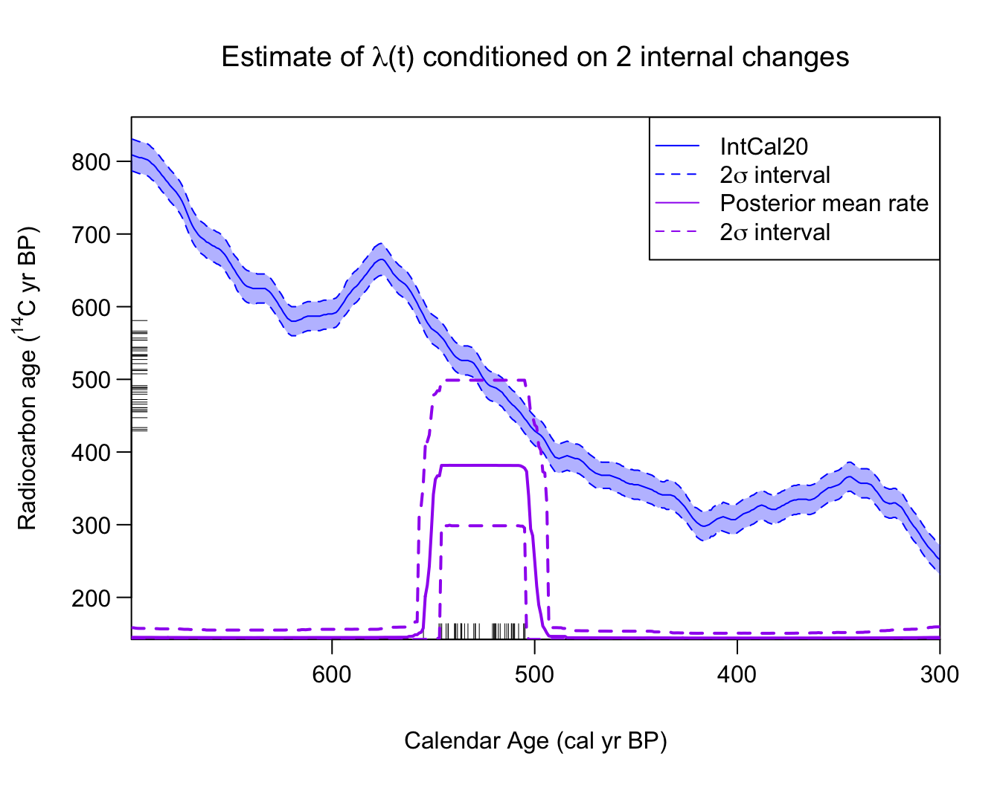
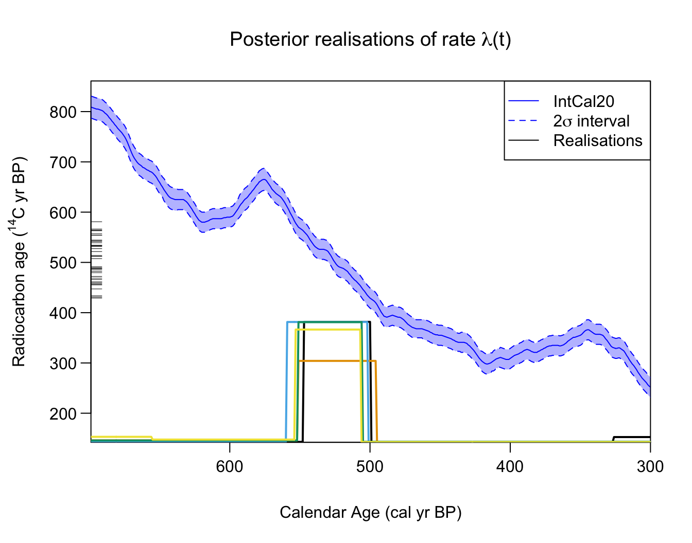

Poisson Process Modelling
Source:vignettes/Poisson-process-modelling.Rmd
Poisson-process-modelling.RmdIntroduction
This component of the library allows you to model (and estimate) the
occurrence of radiocarbon samples as a variable-rate (inhomogeneous)
Poisson process. This is done using the function
PPcalibrate(). The aim of this function is primarily to
allow a user to estimate the variable (calendar year) rate at which a
set of radiocarbon samples are observed, and identify changepoints in
that rate.
This Poisson process model can also be used in a “dates-as-data” approach (Rick 1987) to provide a proxy for changes in population or activity, dependent upon the representativeness of the underlying sampling. For this method, the estimated rate of the Poisson process provides the proxy.
Modelling Ideas
Suppose we have a series of events, which occur at calendar times cal yr BP. Each event is assumed to result in the generation of a radiocarbon sample, . Examples of events might be:
- death of an animal (which leaves a bone)
- creation of a cave painting (which leaves a painting)
- construction of a settlement (which leaves a farmstead)
- a palaeofire (which leaves behind charcoal)
We model the occurrence of these events as random and aim to investigate whether, and how, the rate at which they occur varies over calendar time.
Specifically, we assume that the events occur according to a Poisson Process with a variable rate . This rate is considered piecewise-constant, but changes an unknown number of times and at unknown calendar ages. We aim to estimate and hence infer how the rate at which the events occur changes over calendar time. Time periods where the rate is high will typically be expected to generate a greater number of events (perhaps since there is more activity, or a greater population, at the site/sites); while periods when the rate is lower (perhaps due to lower activity at the site/sites) will be expected to have fewer events.
When the calendar ages of the events are known exactly, estimation of the variable rate can be tackled directly via reversible jump Markov Chain Monte Carlo (RJ-MCMC) (Green 1995). However, when we only observe the radiocarbon ages of the samples () the underlying calendar ages are uncertain and must be estimated via radiocarbon calibration. This complicates the process of estimating especially as the calibration must be done simultaneously to its estimation (as the modelling will influence the set of and vice versa). In this library, we provide a rigorous approach to the estimation of .
![_Modelling sample occurence using a Poisson process with a latent occurence/activity rate. Left Panel: An illustration of a Poisson process with two changepoints in the occurrence rate. The samples (shown as a rug in purple) occur at random calendar times, but proportional to the underlying occurrence rate. There are therefore more samples between (2700, 2300) cal yr BP than other times. Right Panel: Each sample has a ^14^C age (shown as black ticks on the y-axis). We wish to reconstruct the underlying Poisson process rate given only these ^14^C determination._](Poisson-process-modelling_files/figure-html/illustrate_PP-1.png)
Modelling sample occurence using a Poisson process with a latent occurence/activity rate. Left Panel: An illustration of a Poisson process with two changepoints in the occurrence rate. The samples (shown as a rug in purple) occur at random calendar times, but proportional to the underlying occurrence rate. There are therefore more samples between (2700, 2300) cal yr BP than other times. Right Panel: Each sample has a 14C age (shown as black ticks on the y-axis). We wish to reconstruct the underlying Poisson process rate given only these 14C determination.
An Inhomogeneous Poisson process
A Poisson process is a common statistical process used to model the occurrence of random events. It is described by specifying the random variables for , where represents the number of events that have occurred in the time interval . Any Poisson process has a parameter , known as the rate of the process. This controls the expected number of events in a particular time interval.
In the case of an inhomogeneous Poisson process, the rate varies over time so that some time periods are expected to have a greater number of event than others. An (inhomogeneous) Poisson process is then defined by the following two properties:
- For any , the distribution of is Poisson with parameter .
- If are disjoint intervals (i.e., non-overlapping) then are independent random variables.
In particular, the first of these properties implies that the expected number of events in a specific time interval is . Hence time periods with higher rates will be expected to have greater number of events. The second implies that, conditional on the rate , the number of events that have occurred in one time period is not affected by the number of events in a different, and non-overlapping time period. It also implies that events are not clustered beyond the effect of the variable rate, e.g., the occurrence of one event does not increase/decrease the probability that another event occurs shortly afterwards. Note that this last assumption is quite strong as clustering might occur in many instances, for example if the animal bones you date all result from the hunting of a single (short-lived) group of individuals, or you date multiple buildings in a settlement.
Final Radiocarbon Model
Given a set of multiple
C
samples,
the function PPcalibrate() will simultaneously:
- calibrate them to provide posterior calendar ages estimates
- estimate the rate of the underlying process. This estimate may provide a useful proxy to make archaeological and/or environmental inference, e.g., to model changes in culture, or useage, or population size over time.
The (calendar) rate at which the samples occur is modelled as a Poisson process with a variable rate . Specifically, is modelled as a piecewise constant function with an unknown number of changepoints: where are the calendar ages at which there are changes in the Poisson process rate, and and are bounding calendar ages. We use reversible jump MCMC (RJMCMC) to alternate between calibrating the samples and updating the estimate of the underlying rate lambda.
Example
This is a basic example which shows you how to solve a common problem. In this simulated example, we will assume that the events (samples) can must lie within the calendar period from [700, 300] cal yr BP. Within this period, we will create 40 artificial samples with C determinations corresponding to the (narrower) calendar period from [550, 500] cal yr BP. Effectively, the underlying model is a Poisson process with a rate We will then investigate if we can reconstruct this underlying information, from just the C values, if we only knew that the calendar ages of the samples lay between the bounding [700, 300] cal yr BP.
set.seed(15)
# Set initial values
n_observed <- 40
rc_sigmas <- rep(15, n_observed)
# Create artificial rc_determinations
calendar_age_range <- c(300, 700)
observed_age_range <- c(500, 550)
true_theta <- seq(
from = observed_age_range[1],
to = observed_age_range[2],
length = n_observed)
intcal_mean <- approx(
x = intcal20$calendar_age_BP,
y = intcal20$c14_age,
xout = true_theta)$y
intcal_sd <- approx(
x = intcal20$calendar_age_BP,
y = intcal20$c14_sig,
xout = true_theta)$y
rc_determinations <- rnorm(
n = n_observed,
mean = intcal_mean,
sd = sqrt(rc_sigmas^2 + intcal_sd^2))
# Fit the model
PP_fit_output <- PPcalibrate(
rc_determinations = rc_determinations,
rc_sigmas = rc_sigmas,
calibration_curve = intcal20,
calendar_age_range = calendar_age_range,
calendar_grid_resolution = 1,
n_iter = 1e5,
n_thin = 10,
show_progress = FALSE)This creates an object PP_fit_output which you can
access directly or use the in-built plotting functions.
Calculating and plotting the posterior estimate of the occurrence rate
To calculate and plot the posterior estimate of
you should use the in-built PlotPosteriorMeanRate()
function. We recommend that you assign the function to a variable (as
shown below). This means that it will not only create the plot, but also
store the posterior mean rate (with associated probability intervals) on
a regular calendar grid should you wish to access it:
# Run plotting function and assign output to PP_posterior_mean_rate_2sigma
PP_posterior_mean_rate_2sigma <- PlotPosteriorMeanRate(PP_fit_output)
# Look at PP_posterior_mean_rate_2sigma (posterior mean and 2 sigma intervals)
head(PP_posterior_mean_rate_2sigma)
#> calendar_age_BP rate_mean rate_ci_lower rate_ci_upper
#> 1 300 0.008011871 0.0001862987 0.04248661
#> 2 301 0.007986965 0.0001862987 0.04232088
#> 3 302 0.007963215 0.0001862987 0.04211068
#> 4 303 0.007914135 0.0001862987 0.04164114
#> 5 304 0.007861676 0.0001862987 0.04094373
#> 6 305 0.007703460 0.0001862987 0.03952506This plots the posterior mean rate of sample occurrence (shown in purple). The C determinations () are shown on the y-axis as a rug. The rug on the x-axis plots the posterior mean of the corresponding calendar ages (i.e., ) after calibration for illustration purposes. Note: In some cases (in particular when an individual calibrated age estimates is bimodal) the posterior calendar mean will not be a good summary.
As you can see, the posterior estimate of identifies the calendar period from which the hypothetical samples have been created [550, 500] cal yr BP. Here, is non-zero, while for the other time periods the rate (correctly) drops to near zero.
Aside: You can also run the function without assigning the output, this will just create the plot, without storing the mean:
# Run plotting function
PlotPosteriorMeanRate(PP_fit_output)Plotting the estimated number of changepoints
You can plot the posterior estimate for the number of internal changes in the rate using the command:
PlotNumberOfInternalChanges(PP_fit_output)Here, we can see that the method estimates that there are most likely to be two changes. Again, this corresponds to the underlying (simulated) data, where there is a step up from a occurrence rate of zero samples/cal yr to a rate of ca. 0.8 samples/cal yr at 550 cal yr BP, and then a step back down to return to a sample occurrence rate of zero at 500 cal yr BP.
Plotting estimates of changepoint locations
You can plot density estimates for the locations (calendar times) of
the changepoints in
,
conditional on the number of such changes, using the
PlotPosteriorChangePoints() function. The default shows the
density estimates for the calendar times at which there are changes in
the occurrence rate, conditional on their being
and
such changes in
over the time period under study. This can however be changed by
specifying n_changes in the function:
PlotPosteriorChangePoints(PP_fit_output)
#> Warning in PlotPosteriorChangePoints(PP_fit_output): No posterior samples with
#> 1 internal changes
# Can add an n_changes argument, e.g., n_changes = c(2, 3, 4)
# if want to condition on a different number of changes This figure can be interpreted as follows. For example, if the model thinks there are only two changepoints in the underlying occurrence rate of the samples, then these changepoints should be located around 500 cal yr BP and 550 cal yr BP (the two distinct dashed density estimates shown in dark green). If the model thinks there are three changepoints in the rate, then these should be located according to the location shown by the dotted red densities (note that here these three locations overlay one another, effectively adding a double changepoint at either 500 or 550 cal yr BP).
The information contained in this plot should be combined with that
in PlotNumberOfInternalChanges() which indicates that the
most likely number of changepoints is two. We may therefore wish to
focus our interpretation on the locations/times of changepoints
conditional on their being this number (i.e., when
).
Note the R warning here: For this simulated data, the posterior model (correctly) never thinks there should be only one changepoint. This is indicated by the warning message returned by R and the absence of a solid blue density in the plot.
Plotting estimates of occurrence rate
You can also plot, conditional on the number of changes in the rate step function , the posterior density estimates for the heights in each of the individual segments (i.e., the rates of sample occurrence in those constant periods)
PlotPosteriorHeights(PP_fit_output)
#> Warning in PlotPosteriorHeights(PP_fit_output): No posterior samples with 1
#> internal changes
# As above can add an n_changes argument, e.g., n_changes = c(2, 3, 4)
# if want to condition on a different number of changes Here, conditional on there being two changes in between 700–300 cal yr BP (so three different values for the rates) we have two rates of ca. 0 events per cal yr (these correspond to the periods 700–550 and 500–300 cal yr BP), and a period with rate ca. 0.6-0.8 events per cal yr (corresponding to the period from 550–500 cal yr BP).
Plotting the posterior calendar age estimates of individual samples
Finally, it is again possible to plot the posterior calendar age
estimates of and individual samples using the
PlotCalendarAgeDensityIndividualSample() function:
PlotCalendarAgeDensityIndividualSample(
9, PP_fit_output, show_hpd_ranges = TRUE, show_unmodelled_density = TRUE)
Changing the calendar age plotting scale
As elsewhere in the library, the calendar age scale (cal yr BP, cal
AD, or cal BC) shown when plotting can be selected via the
plot_cal_age_scale variable within the relevant functions.
In the case of the Poisson process modelling, the calendar age scale can
be set in PlotPosteriorMeanRate() and
PlotPosteriorChangePoints(), e.g.,
PlotPosteriorChangePoints(PP_fit_output,
plot_cal_age_scale = "AD")
#> Warning in PlotPosteriorChangePoints(PP_fit_output, plot_cal_age_scale = "AD"):
#> No posterior samples with 1 internal changesCalculating the posterior estimate of the occurrence rate on a bespoke grid
To calculate the posterior estimate of
on a user-specified calendar age grid and with user-specified
probability intervals (the default is
)
you can also use the in-built FindPosteriorMeanRate()
function:
# Calculating 2 sigma (95.4%) intervals on posterior mean occurrence rate
PP_posterior_mean_rate_2sigma <- FindPosteriorMeanRate(
PP_fit_output,
calendar_age_sequence = seq(300, 500, by = 1),
interval_width = "2sigma")
# Look at posterior mean with 2 sigma probability interval
head(PP_posterior_mean_rate_2sigma)
#> calendar_age_BP rate_mean rate_ci_lower rate_ci_upper
#> 1 300 0.008010096 0.0001862987 0.04248661
#> 2 301 0.007985190 0.0001862987 0.04232088
#> 3 302 0.007961441 0.0001862987 0.04211068
#> 4 303 0.007912361 0.0001862987 0.04164114
#> 5 304 0.007859902 0.0001862987 0.04094373
#> 6 305 0.007701685 0.0001862987 0.03952506Additional Plotting Features
Calculating and plotting the posterior estimate of the occurrence rate over time conditioned on a specific number of changes
Should the user wish, it is possible to calculate and plot the
posterior mean estimate of the occurrence rate over time
conditioned on a user-specified number of changes. This can be
done by specifying the optional n_changes argument in
either the PlotPosteriorMeanRate() or
FindPosteriorMeanRate() functions:
# Conditional on TWO internal changes in the occurrence rate,
# Calculate and plot the posterior mean rate over time
# (with its 2 sigma intervals)
conditional_2_changes_posterior_mean_rate <- PlotPosteriorMeanRate(
PP_fit_output,
n_changes = 2) # here n_changes must have length one (i.e., a single number)
# Look at conditional posterior mean with 2 sigma probability interval
head(conditional_2_changes_posterior_mean_rate)
#> calendar_age_BP rate_mean rate_ci_lower rate_ci_upper
#> 1 300 0.007879740 1.942084e-05 0.04850640
#> 2 301 0.007879740 1.942084e-05 0.04850640
#> 3 302 0.007879740 1.942084e-05 0.04850640
#> 4 303 0.007774786 1.942084e-05 0.04810404
#> 5 304 0.007692820 1.942084e-05 0.04684532
#> 6 305 0.007679320 1.942084e-05 0.04684532Note: We do not expect this functionality will be particularly relevant for most users unless they known, in advance, how many changes in the rate there are in the time period. We instead advise users to consider the number of changes in the rate as unknown and allow the MCMC to determine the appropriate number of rate changes itself (averaging over the possible values). Even when one conditions on a specific number of rate changes, since the locations of those changes remain unknown and are different for each realisation, the conditioned posterior mean will not necessarily reflect that number of sharp discontinuities (as we can see above where the jumps in the posterior mean remain somewhat smoothed).
Plotting individual posterior MCMC realistions of the occurrence rate
Finally, the PlotRateIndividualRealisation() function
allows users to plot individual realisations of the occurrence rate
drawn from the MCMC. One can specify the number of realisations to plot,
whether those realisations should be randomly chosen or correspond to
specific iterations of the MCMC, as well as the plotting colours:
# Choose some nice plotting colours (from Okabe-Ito)
realisation_colours <- c("#000000", "#E69F00", "#56B4E9", "#009E73", "#F0E442" )
# Plot 5 random realisations from posterior
PlotRateIndividualRealisation(
PP_fit_output,
n_realisations = 5,
plot_realisations_colour = realisation_colours)